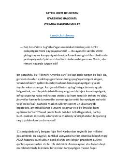

GHGʻarb sivilizatsiyasi va Amerika jamiyatining demografik hamda madaniy inqirozi haqidagi tahliliy asar.
Muallif ushbu asarda Gʻarb sivilizatsiyasi va Amerika Qoʻshma Shtatlarining demografik oʻzgarishlar, immigratsiya hamda madaniy inqiloblar taʼsirida inqirozga yuz tutayotganini tahlil qiladi. Kitob milliy davlatchilikning zaiflashuvi va jamiyatdagi etnik boʻlinishlar xavfini tarixiy hamda siyosiy nuqtai nazardan yoritib beradi.